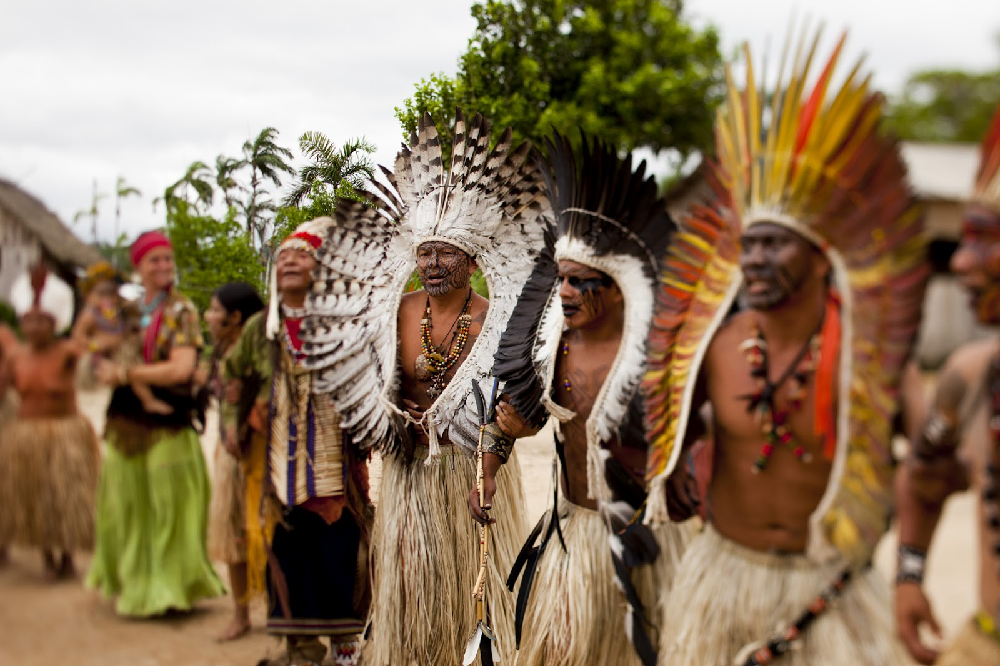

Ritual da Ayahuasca
Os Yawanawá, são reconhecidos por seus rituais de cura intrinsecamente ligados ao uso da Ayahuasca, uma planta sagrada. Esses rituais são liderados por xamãs, figuras centrais na tribo que atuam como intermediários entre o mundo espiritual e o físico. Durante a cerimônia, os participantes consomem o Ayahuasca, acreditando que essa planta possui propriedades curativas e capacidade de proporcionar experiências espirituais profundas.
O Ayahuasca, para os Yawanawá, não é apenas uma planta, mas um meio de comunicação direta com os espíritos. Os xamãs utilizam essa conexão para buscar conhecimento e orientação, especialmente no que diz respeito à cura de doenças físicas e espirituais.